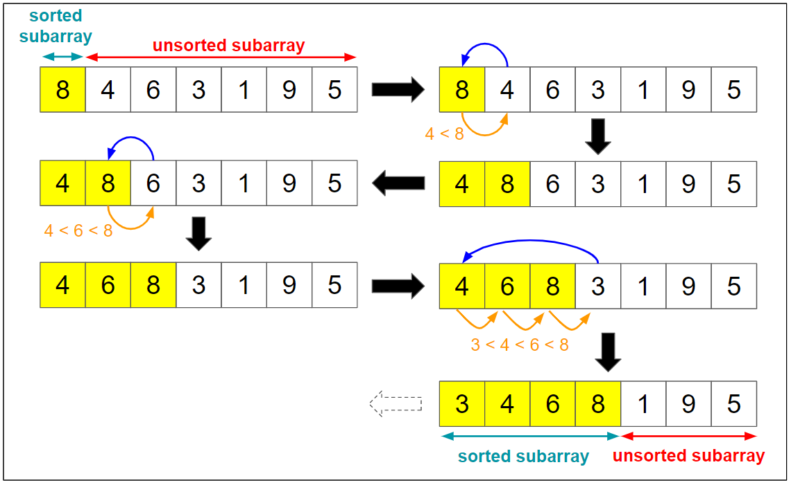

Average Complexity O(n2)
Best Case O(n)
Worst Case O(n2)
Space Complexity O(1)

Description:
Insertion sort is a simple sorting algorithm that works similar to the way you sort playing cards in your hands.
The array is virtually split into a sorted and an unsorted part. Values from the unsorted part are picked and
placed at the correct position in the sorted part.
Sorting is typically done in-place, by iterating up the
array, growing the sorted list behind it. At each array-position, it checks the value there against the largest
value in the sorted list (which happens to be next to it, in the previous array-position checked). If larger, it
leaves the element in place and moves to the next. If smaller, it finds the correct position within the sorted
list, shifts all the larger values up to make a space, and inserts into that correct position.
Uses: Insertion sort is used when number of elements is small. It can also be useful when input array is almost
sorted, only few elements are misplaced in complete big array.
Boundary Cases: Insertion sort takes maximum time to sort if elements are sorted in reverse order. And it takes
minimum time (Order of n) when elements are already sorted.